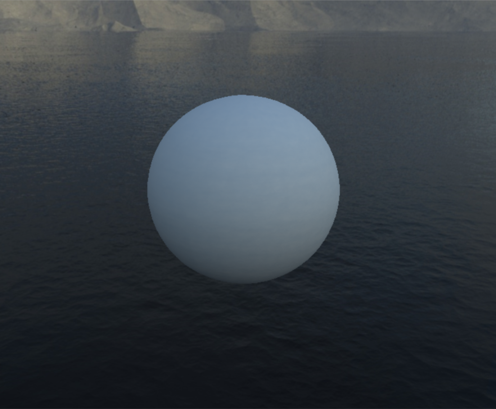
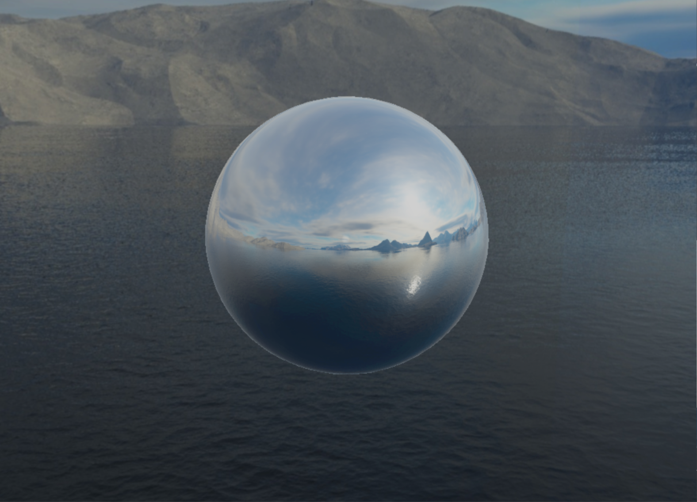
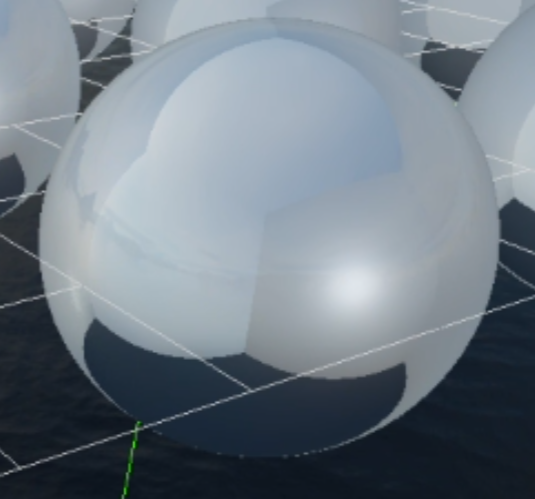
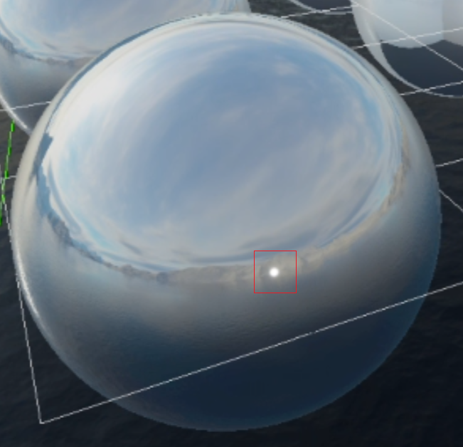

Image-Based Lighting
Overview
In my master's degree project Bound by Death, we wanted to create the right atmosphere for our dark fantasy game. Following our teacher's advice, we decided to use IBL for indirect lighting and reflections in the game's outdoor areas to help create the atmosphere we were aiming for.
Another classmate and I took on the task of using the skybox to generate specular and diffuse illumination while accounting for the roughness and metallic properties of the materials.
Later, a third classmate joined us because he wanted to learn how IBL worked.


Problems and objectives
We had to implement IBL from scratch. Following the course material and our teacher's advice, my classmate and I worked together throughout the task.
To implement IBL, we set the following goals:
- Implement diffuse IBL.
- Implement an initial version of specular IBL that uses a BRDF texture.
Technical implementation
First goal: Implement diffuse IBL.
First, we generated the irradiance cubemap. To store it, we added a new resource to the Skybox class.
Next, we created a small render pass that receives the skybox cubemap and renders the irradiance map to the six faces of the new cubemap. We execute this pass when the skybox is initialized.
This pass uses Malley's method for hemisphere sampling and Monte Carlo integration with importance sampling for the approximation, using a Hammersley low-discrepancy sequence to generate sample points.
Once the irradiance cubemap had been generated, we modified the rendering pipeline to pass it to the pixel shader.
In the pixel shader, we then sample the irradiance cubemap using the pixel's surface normal to calculate its diffuse lighting.
Second goal: Initial implementation of specular IBL.
We started by generating the BRDF texture. To do this, we created a small render pass that runs only once, when the engine starts.
This pass generates a texture that is stored for the entire runtime. We render a full-screen triangle and, in the pixel shader, adapt our Cook-Torrance BRDF function into a visibility function and integrate it using importance sampling. The resulting texture stores combinations of N·V and roughness values. Values near the (0, 0) coordinate appear green; as the values increase, the color shifts toward red, while values near (1, 1) appear black.
The next step was to generate the prefiltered environment map. We added another resource to the Skybox class to store the prefiltered cubemap.
We created a cubemap resource with eleven mip levels and another small render pass to render them.
In the shader, we reused the Cook-Torrance BRDF function and replaced the normal distribution function with GGX importance sampling. For each mip level, we generated a cubemap that becomes progressively blurrier as the mip level increases.
We then modified the rendering pipeline to pass the prefiltered environment cubemap and the BRDF texture to the shader.
Finally, we calculated the two terms of the specular lighting contribution and prepared two results. For metallic materials, we multiplied the base color by the first term and added the second term. For non-metallic materials, we used the constant value 0.04 for the base reflectance, as recommended by our teacher.
We then interpolated between the diffuse contribution plus the non-metallic result and the metallic result, using the material's metallic value as the interpolation factor. The result was added to the direct-lighting contribution.
Challenges and problem-solving
We encountered two major issues during development:
The faces of the prefiltered cubemap's mip levels did not match.
While implementing the prefiltered environment map, we noticed that the environment cubemap's faces did not align correctly in reflections on the geometry. This occurred only when the material's roughness was high enough for the shader to sample higher mip levels.
The issue occurred because we had forgotten to resize the viewport to match each mip level's dimensions. We fixed it by setting the viewport size for each mip level to the original dimensions divided by 2 to the power of the mip-level index.
A constant light flash in reflections.
Toward the end of the implementation, we noticed a small, persistent light flash on all meshes with reflections.
After extensive debugging and with help from our teacher, we discovered that the sampler used for the BRDF texture was set to wrap mode. This caused the shader to sample incorrect BRDF values at the texture boundaries. We fixed the issue by changing the sampler's addressing mode to clamp.


Takeaways and next steps
Through this task, I learned how image-based lighting works and the mathematics behind it.
This was also my first time working with cubemaps and mip levels, so I learned how to manage cubemap resources and generate and use mip levels efficiently.
As a future improvement, I would like to refactor the passes used to generate the BRDF texture and the prefiltered and irradiance cubemaps into a more scalable, reusable system. When we implemented this feature, the engine architecture was still evolving, so the related code is now somewhat scattered throughout the codebase.